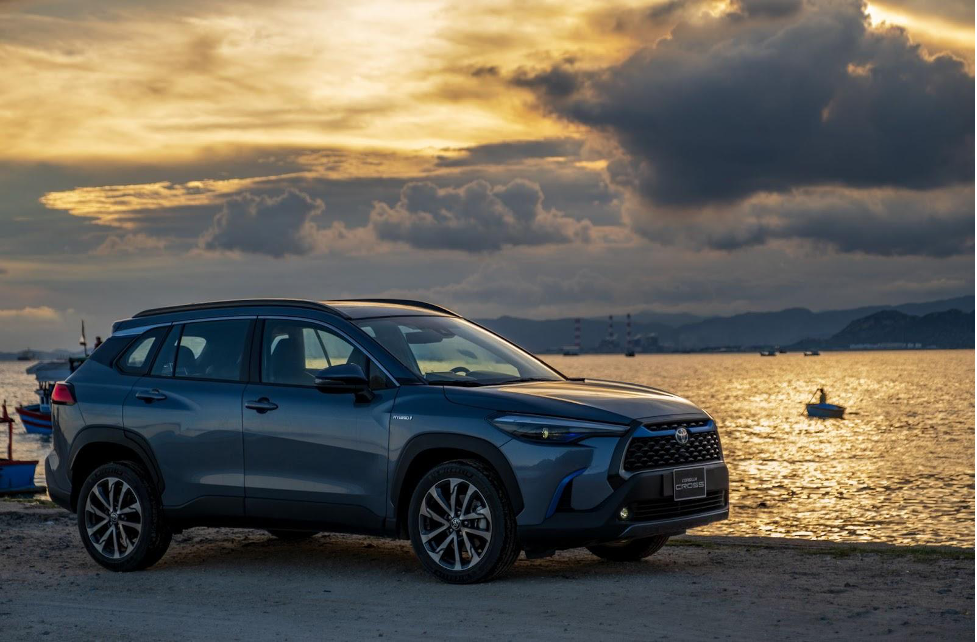

Toyota Việt Nam xác nhận phiên bản nâng cấp cho Corolla Cross sẽ ra mắt ngày 6/5 với diện mạo mới, tăng trang bị và giảm giá bán.
Từ đầu năm đến nay, Corolla Cross ghi nhận mức doanh số giảm, không còn nằm top 10 bán chạy hàng tháng như các năm trước. Lý giải điều này, đại diện Toyota Việt Nam cho biết, lượng xe phiên bản cũ còn lại không nhiều, bởi hãng chuẩn bị ra mắt phiên bản nâng cấp cho Corolla Cross, ra mắt ngày 6/5.

Theo Toyota Việt Nam, Corolla Cross 2024 sẽ được nâng cấp về thiết kế ngoại thất, bổ sung tiện nghi nhưng giá bán chính thức giảm từ 40-50 triệu đồng tùy phiên bản. Theo đó, giá bán cho phiên bản mới 1.8V là 820 triệu đồng và 1.8 HEV (động cơ hybrid) giá 905 triệu đồng. Như vậy, Corolla Cross 2024 sẽ có 2 phiên bản, bản G được loại bỏ.
Về ngoại thất, phiên bản mới có lưới tản nhiệt thiết kế dạng tổ ong, thể hiện xu hướng điện hóa. Đèn báo rẽ dạng dòng chảy, kết hợp dải LED định vị ban ngày. Phanh tay điện tử và giữ phanh tự động là trang bị mới, trở thành tiêu chuẩn trên cả 2 phiên bản. Riêng bản 1.8 HEV, hãng bổ sung hỗ trợ phanh khi lùi, sạc không dây, màn hình người lái kích thước 12,3 inch và màn hình giải trí 10 inch.
Giá bán mới và các trang bị tăng thêm của Corolla Cross được giới chuyên gia nhận định sẽ giúp mẫu xe này tăng sức cạnh tranh. "Lượng khách đến đại lý tìm hiểu về trang bị, đăng ký trải nghiệm Corolla Cross 2024 tăng mạnh từ khi có thông tin chính thức từ hãng", đại diện bán hàng một đại lý Toyota tại Hà Nội cho biết. "Trong phân khúc, Corolla Cross vẫn có lượng khách quan tâm lớn".